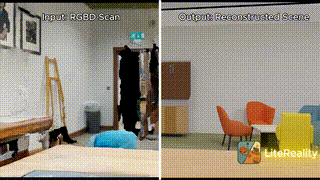
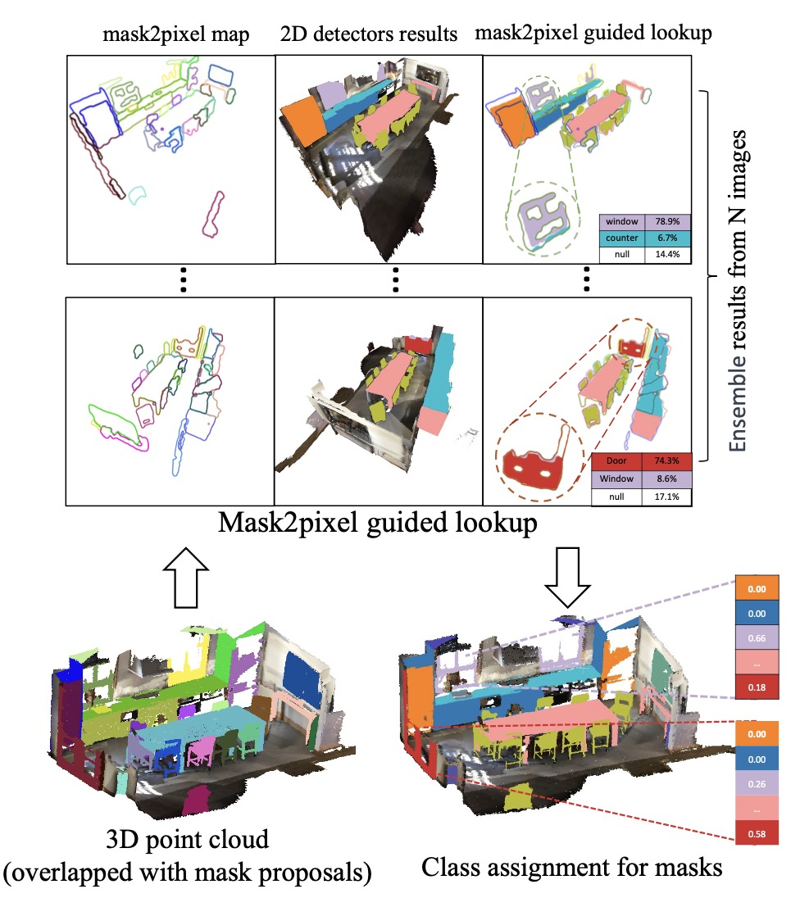

|
Zhening Huang I'm currently a fourth year PhD student in Information Engineering at the University of Cambridge, working with Professor Joan Lasenby. My research focuses on 3D vision, with experience in open world understanding, 3D reconstruction and graphics for appearance modeling. Recently I started to work on video diffusion models for the vision of learning 4D dynamic world. |
{kind=link}
News
|
Selected publication |
|
 |
LiteReality: Graphics-Ready 3D Scene Reconstruction from RGB-D Scans
Zhening Huang, Xiaoyang Wu, Fangcheng Zhong, Hengshuang Zhao, Matthias Nießner, Joan Lasenby NeurIPS, 2025 Project Page / Paper / Video / GitHub 
TLDR: LiteReality is an automatic pipeline that converts RGB-D scans of indoor environments into graphics-ready scenes with high-quality meshes, PBR materials, and articulated objects ready for rendering and physics-based interactions. |
|
 |
OpenIns3D: Snap and Lookup for 3D Open-vocabulary Instance Segmentation
Zhening Huang, Xiaoyang Wu, Xi Chen, Hengshuang Zhao, Lei Zhu, Joan Lasenby Project Page / Paper / Video / GitHub 
ECCV 2024 TLDR: OpenIns3D proposes a "mask-snap-lookup" scheme to achieve 2D-input-free 3D open-world scene understanding, which attains SOTA performance across datasets, even with fewer input prerequisites. |
|
Design and source code from Jon Barron's website |